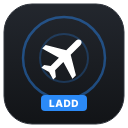

Update FR24 LADD Unblocker
Browser extension, loaded unpacked
Installed-
Newestchecking…
Your browser loads this extension from the folder you unzipped it into. Choose that folder once and allow the browser to edit it; after that, updating is one click.
Not sure where it is? Open chrome://extensions (edge://extensions in Edge,
brave://extensions in Brave), find FR24 LADD Unblocker and click Details. The folder is shown next to Source.
Install it by hand
This browser doesn't let an extension write to its own folder, so the new version goes in by hand. It takes a minute.
- Download the new version with the button below.
- Unzip it over the extension's folder, replacing the files. The folder is shown next to Source on the extension's Details page.
- On Flightradar24, open LADD Unblock and click Reload extension.
Using Brave? Turn on one-click updates: open
brave://flags, search for
File System Access API, set it to Enabled and relaunch Brave. This page will then update the extension for you.